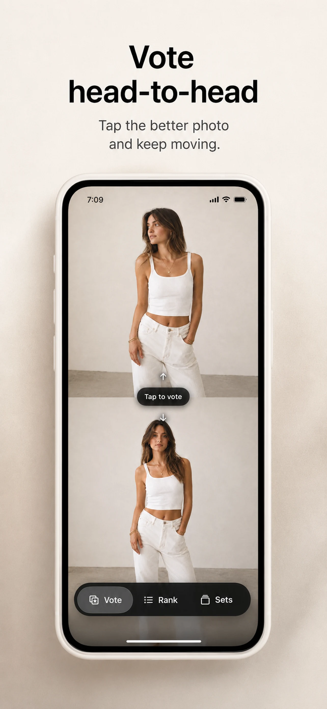
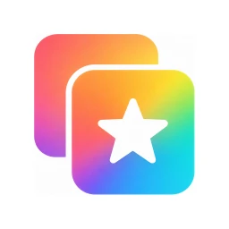
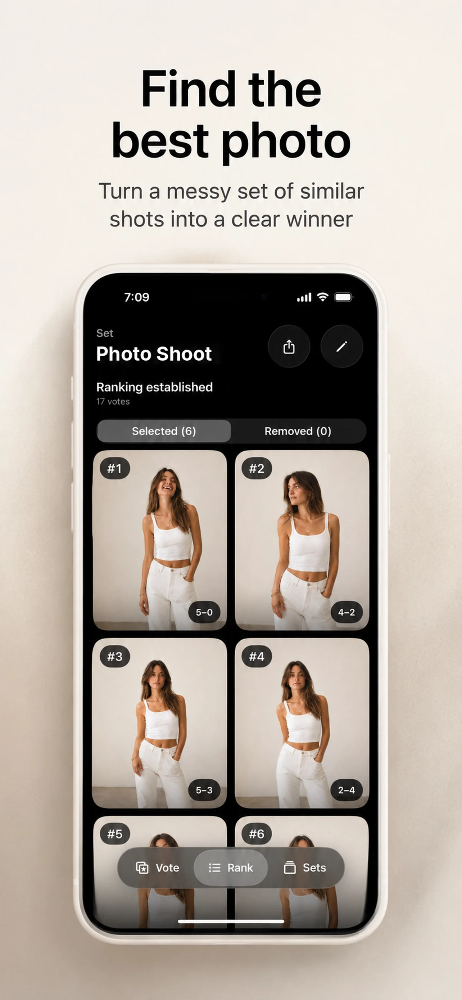
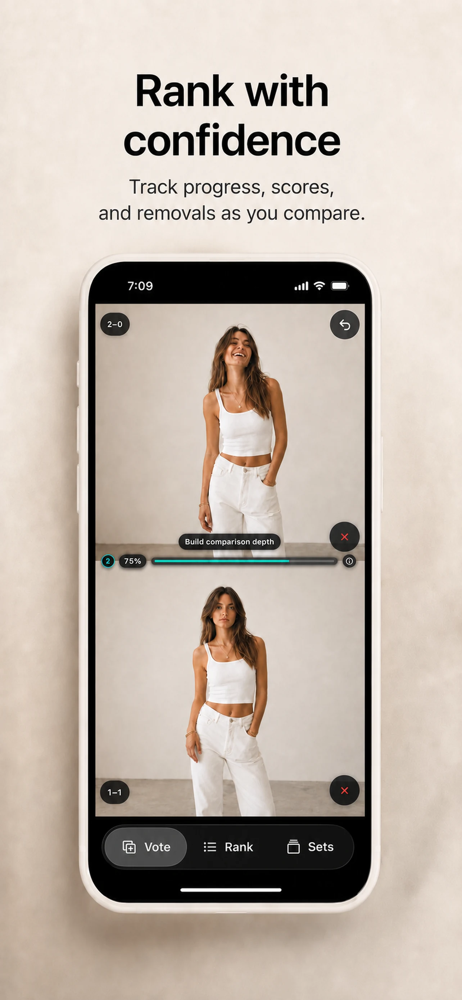
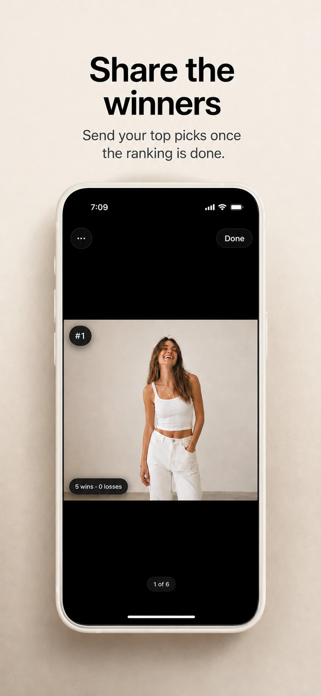
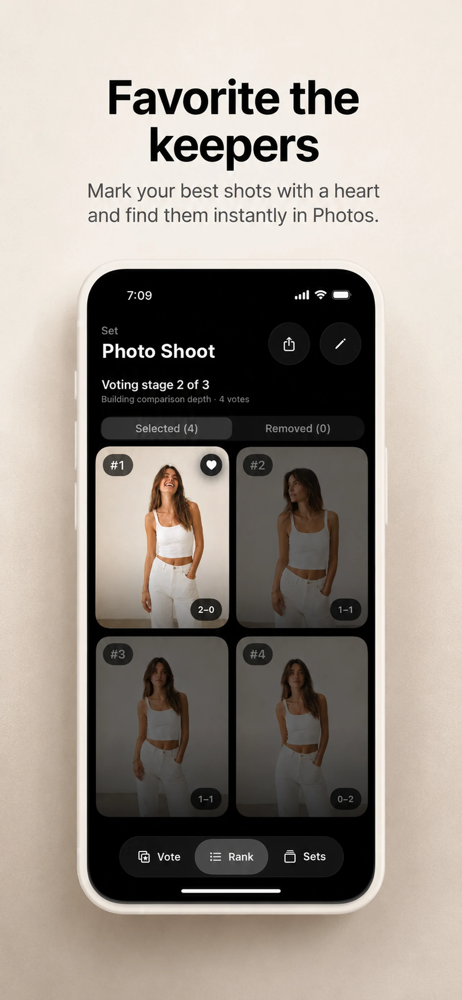
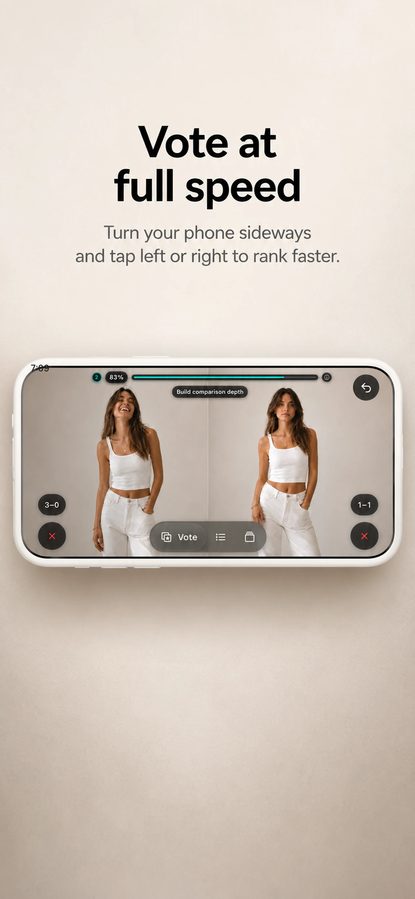

01
Choose your photos
Select the portraits, trip shots, edits, or poses you want to compare.


Photo Rank Get the appAvailable for iPhone
Photo Rank turns a group of similar photos into simple head-to-head choices—and a clear winner based on your taste.
No account required. Your photos stay on your device.

Clear winner Your taste, rankedCompare head-to-head
Watch the ranking take shape
Share your top picks
A better way to choose
Choosing the best photo shouldn’t require endlessly swiping back and forth. Make one easy choice at a time and let Photo Rank turn those decisions into a result you can trust.
How it works
Select the portraits, trip shots, edits, or poses you want to compare.

Tap the photo you prefer in each pair. The ranking updates as you go.

See every photo in ranked order, then share the picks that rise to the top.

Perfect for


Built for deciding
Watch the order update with every vote, including win and loss results for each photo.
Look through your finished ranking in a gallery designed to make the differences easy to see.
Create separate rankings for every occasion and remove unwanted shots without deleting the originals.
Your photos and ranking content stay on your device. No account or login is required.
Your best shot is in there
Stop second-guessing and start choosing with confidence.
Download on theApp Store